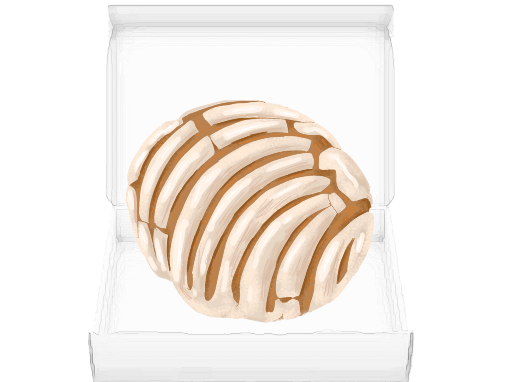

Home
Interview 1
Interview 2
Interview 3
Take Away
The first person who agreed to help with my baking journey , (Dolores)is actually one of my neighbors. She has been baking for almost ten years and makes delicious treats. The first time I tried her baking it was in the form of a concha. For those who might not know what a concha is , Conchas are a traditional Mexican sweet bread roll. Conchas get their name from their round shape and their striped, seashell-like appearance. A concha consists of two parts, a sweetened bread roll, and a crunchy topping composed of flour, butter, and sugar. The next time she shared a gelatin dessert that had a white base and was made up of smaller,colorful cubes of gelatins.
During our interview, she told me that her interest in baking actually was similar to mine in that it started from her teenage years. She loved baking with her mother and sister in which they learned to make many traditional Mexican baked goods. From there she kept baking and trying newer recipes like cakes that incorporate various layers and different fruit flavors. She also recommended easier recipes for me to try such as chocolate banana muffins,which I actually had an opportunity to do with her and get hands-on experience with and that I am extremely grateful for . Some more recipes that I will be trying that she recommended are empanadas(stuffed pastries), and her recipe for conchas. Another important tip she shared with me were tools to use.For beginner bakers it is essential that they atleast have measuring cups and spoons, mixing bowls, a hand or stand mixer, baking pans (like a 9x13 inch pan, cookie sheets, and muffin tins), a rubber spatula, and a rolling pin.Some mistakes that she said I should avoid is to not overmix batter, not properly measuring ingredients and opening the oven door too often while baking.I feel extremely grateful for the opportunity that my neighbor has allowed me to have and for letting me interview her in the first place. She told me she was looking forward to seeing me progress in my journey and excited for the future in which we would be able to bake more desserts together.
Click to eat the treat

Take Away:
My experiecne with my neighbor taught me many new things about baking .
She's shared recipes, tips, and even let me bake with her. It's made me love baking even more and taught me that it's not just about following instructions. Baking is a way to connect with others and learn about different cultures.Her advice on tools and avoiding mistakes are things I will be something that is with me as I bake in the future. I'm thankful for her support and excited to bake more with her in the future. This whole experience has shown me how important it is to have someone to learn from and share your passion with.